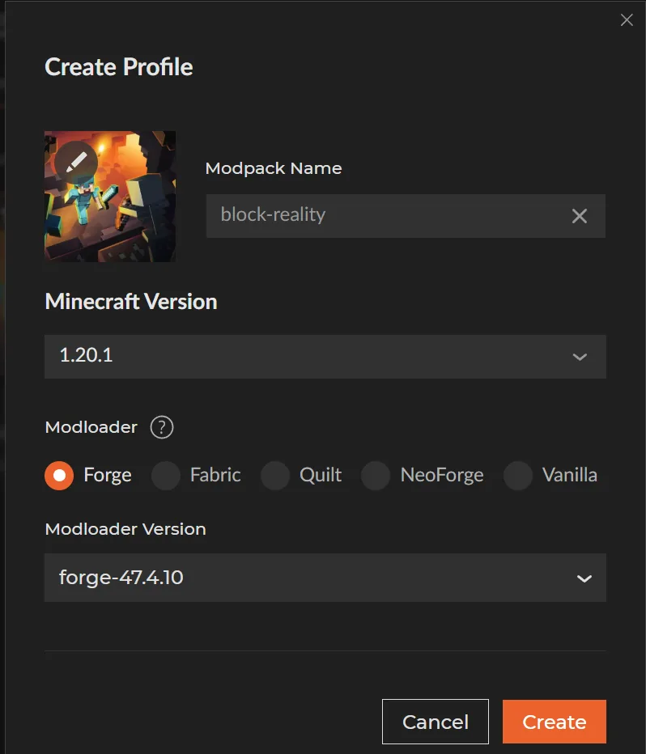
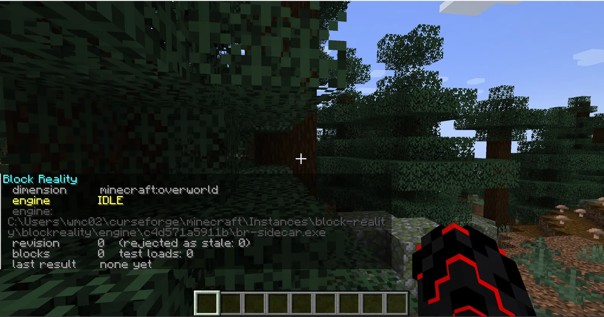

What you need
Any launcher works — the vanilla launcher, Prism, MultiMC, Modrinth, CurseForge. Nothing else needs installing: no separate library, no runtime, no download at first launch.
macOS and ARM: this release ships no engine for your platform. The mod still loads and plays
normally — analysis is disabled, and it says so rather than failing quietly. To get analysis you would have to
build br-sidecar from source and point sidecarPath at it.
Install
One file. The jar is the whole installation — the finite element engine travels inside it and unpacks itself the first time analysis is needed. If you installed an earlier version, read upgrading from 0.1a / 0.2a first.
Have a Forge 1.20.1 instance
Skip this if you already do. Otherwise create a profile: Minecraft 1.20.1, modloader
Forge, any 47.x version.

forge-47.4.10. Any launcher will do — the
version numbers are what matter.Put the jar in mods/
That is the install. Nothing goes anywhere else.
2.4 MB — most of it is the two engine binaries, Windows and Linux, riding along inside.
The GitHub release additionally carries the loose engines, the optional installer scripts and the full
SHA256SUMS.txt.
The folder you want is the game directory — the one holding mods/ and
saves/, not the launcher's own folder. If mods/ does not exist yet, make it.
Launch and check
Start the instance, load any world, press T and run:
/br statusOn a fresh world with nothing built yet, you should get back:

engine: — it resolves into
blockreality\engine\c4d571a5911b\, the folder the jar unpacked itself into. Nothing was placed
there by hand.
The same thing as text:
Block Reality dimension minecraft:overworld engine IDLE engine: <game directory>\blockreality\engine\c4d571a5911b\br-sidecar.exe revision 0 (rejected as stale: 0) blocks 0 test loads: 0 last result none yet
engine IDLE— found and waiting. Idle because there is nothing built yet.engine:— the binary it resolved to. See where the engine comes from. If this line is missing,/br statuslists every path it searched instead.blocks 0 test loads: 0— nothing structural in range.last result none yet— no solve has run.
The engine: line and the searched-path list only print for operators — they spell out
filesystem paths, including the account name, which a non-privileged player on a server has no business
reading. A single-player creative world has the permission already.
Where the engine comes from
Block Reality is still two programs — the mod reads your blocks and draws the HUD, and a separate process runs the finite element solve. What changed in 0.3 is that you no longer have to place the second one. It rides inside the jar and unpacks itself on first use to:
<game directory>\blockreality\engine\<hash>\br-sidecar.exeYou put one file in. After the first analysis runs, the instance looks like this — the highlighted line is the only thing you placed:
.minecraft\ ├── mods\ │ └── blockreality-0.3c.jar ← you put this here ├── blockreality\ │ └── engine\ │ └── c4d571a5911b\ │ └── br-sidecar.exe ← unpacked from the jar ├── config\ └── saves\
The folder is named after the binary's own SHA-256. Three things fall out of that: a mod update lands beside the old engine instead of overwriting it, a half-written file can never be mistaken for a good one, and nothing is ever downloaded — those bytes were already in the jar you installed, and anything whose hash does not match is refused rather than run.
FrameCore is statically linked into br-sidecar, so there is no separate library to install.
Running it as its own process rather than loading it into the JVM means a fault in the C++ costs one
analysis instead of the server and the save.
The search order
It takes the first one that exists, most explicit first:
| # | Where | Set by |
|---|---|---|
| 1 | sidecarPath in config/blockreality-server.toml |
you |
| 2 | -Dbr.sidecar JVM argument |
you |
| 3 | BR_SIDECAR environment variable |
you |
| 4 | the copy bundled in the jar | the mod — this is the normal case |
| 5 | br-sidecar in the game directory, or in blockreality/ |
an older release's installer |
| 6 | PATH |
your system |
The three explicit settings come first so a path you chose is never quietly overridden. The bundled engine
comes before the game directory on purpose: a loose br-sidecar.exe sitting there is most
often one an older installer left behind, while the bundled one is guaranteed to match the jar that is running.
Upgrading from 0.1a or 0.2a
Delete the old blockreality-*.jar from mods/ before adding the new one — two copies
of the same mod in mods/ is a load error.
The loose br-sidecar.exe that the old installer put in your game directory can stay or go. Either
way it is no longer what runs: the bundled engine is found first, precisely so that a stale binary left by an
older release cannot outrank the one that matches the jar you are running. Deleting it is tidier and costs
nothing.
The installer scripts, if you want them
Optional. They do exactly what step 2 does — put the jar in mods/ — plus copy a loose engine next
to it, and find mods/ for you if you would rather not go looking. They ship in the release archive
on GitHub, not here, because the jar on its own is a complete install.
Extract the archive properly before running one: the script copies the files sitting next to it, so it needs
the folder intact. Then on Windows double-click install.bat, or on Linux:
./install.shWith no arguments it searches the usual instance locations for the vanilla launcher, Prism, MultiMC, Modrinth and CurseForge. One hit and it uses it; several and it lists them and asks. You can also name the directory:
install.bat "D:\games\my-instance\.minecraft"./install.sh ~/.minecraftTo see what it found without installing anything:
install.bat --list Block Reality - 安裝器 / installer
==================================
1) [Forge] C:\Users\you\AppData\Roaming\.minecraft
2) [no Forge] C:\Users\you\AppData\Roaming\PrismLauncher\instances\survival\.minecraft
3) [no Forge] C:\Users\you\curseforge\minecraft\Instances\block-reality
And a successful run:
Block Reality - 安裝器 / installer
==================================
mod -> C:\Users\you\AppData\Roaming\.minecraft\mods\blockreality-0.3c.jar
engine -> C:\Users\you\AppData\Roaming\.minecraft\br-sidecar.exe
[OK] 這個實例裡有 Forge。用你平常的啟動器開遊戲就好。
Forge found in this instance. Launch it the way you normally do.
進遊戲後：創造分頁 "Block Reality"。有問題打 /br status。
In game: creative tab "Block Reality". If anything looks off: /br status
Real output, with the account name replaced. The engine it copies is the loose one, which lands in the game directory — search position 5. The bundled copy inside the jar is still what actually runs.
Checking the download
The jar served here:
f38c88e1425f13d9e5f072072de475110a3c3ffd0a91034fdb814b5468ed82ce blockreality-0.3c.jar
Also as a file, so you can check it in one command:
sha256sum -c SHA256SUMS.txtOr on Windows:
certutil -hashfile blockreality-0.3c.jar SHA256SHA256SUMS.txt — the same hash the GitHub release lists for this file.
Troubleshooting
/br status shows no engine path
Instead of the engine: line you get a list of every place it looked. Read the
bundled: entry first — normally the engine comes from there, so if it failed the message says
why.
The two causes worth checking:
-
Antivirus quarantined it. A freshly unpacked unsigned
.exeis exactly what heuristic scanners grab. Restore it, allow the folder, then/br reset— that makes the mod try the unpack again without restarting the game. - Your platform has no engine in this build. macOS and ARM say so explicitly. The mod plays fine; analysis is off.
The installer says there is no Forge, but there is
Known false alarm on CurseForge instances. CurseForge keeps the loader outside the
instance folder, so the check — which looks for versions/*forge* or
libraries/net/minecraftforge/ — finds nothing and prints [no Forge] even when
minecraftinstance.json records a perfectly good forge-47.4.10.
It is only a warning. The mod is installed either way, and if you made the profile with a Forge 1.20.1 loader it will load normally. Prism, MultiMC and the vanilla launcher are all detected correctly.
The installer found no Minecraft instance
It searched these:
%APPDATA%\.minecraft
%APPDATA%\PrismLauncher\instances\*
%APPDATA%\MultiMC\instances\*
%APPDATA%\ModrinthApp\profiles\*
%USERPROFILE%\curseforge\minecraft\Instances\*
If yours lives somewhere else, hand it the path directly:
install.bat "D:\games\my-instance\.minecraft"Or skip the script entirely and drop the jar in mods/ yourself — that is the whole install.
It warns there is no engine next to the script
The archive did not fully extract, or install.bat was moved out on its own. It copies the
files beside it, so it needs the folder intact.
Harmless in 0.3c. That loose engine is only search position 5; the copy inside the jar is what runs anyway.
The mod loads but analysis never happens
Check /br status first — it prints the engine state, the resolved path, the block count and
the last result, which between them identify almost every case.
If blocks is 0 while you are standing next to a structure, the blocks were probably placed by
command or WorldEdit, which fire no place event. /br scan re-reads the chunks around you.
If the last result says MECHANISM, that is the correct answer rather than a fault: nothing is
holding the structure up. A block counts as grounded only when the block directly below it is
solid and non-structural — a beam butted sideways against a wall is not supported by it. See
the usage guide.